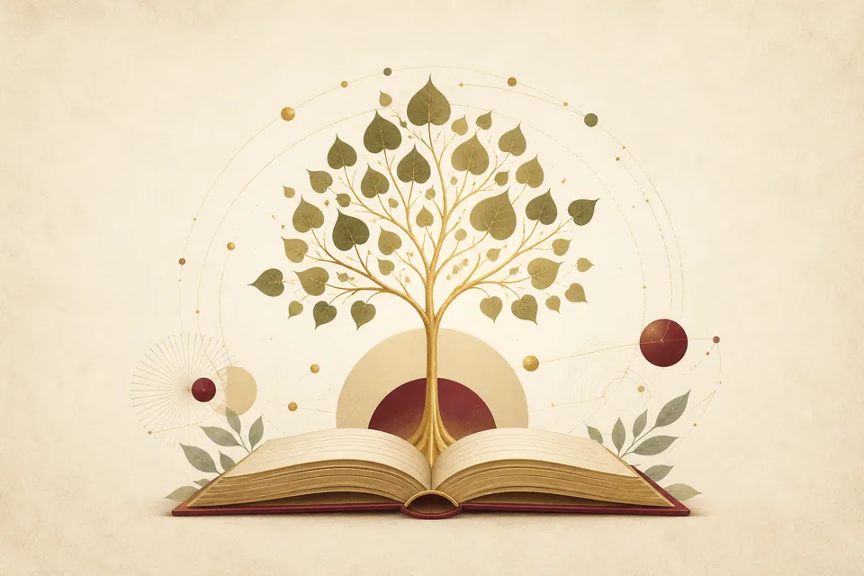

Programmes
Find the Right Path for Your Buddhist Studies
From introductory learning to postgraduate study, BPC offers structured pathways for learners at different stages.
New to Buddhism?
Start with Introduction to Buddhism
A welcoming course for learners with little or no knowledge of Buddhism, and a foundation for further study.
01
Begin
Discover the foundations
02
Build a foundation
Develop structured understanding
03
Advance your studies
Progress through degree study

At a glance
Compare study pathways
| Programme | Duration | Suitable for |
|---|---|---|
| Introduction (English or Chinese) | 10 weeks | New learners |
| Diploma (English or Chinese) | 1 year | Foundation study |
| BA in Buddhist Studies | 3 years | Degree-level study |
| MA in Buddhist Studies | 1 year | Postgraduate study |
Need guidance?